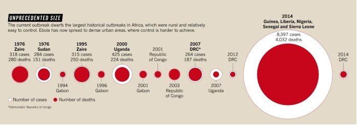
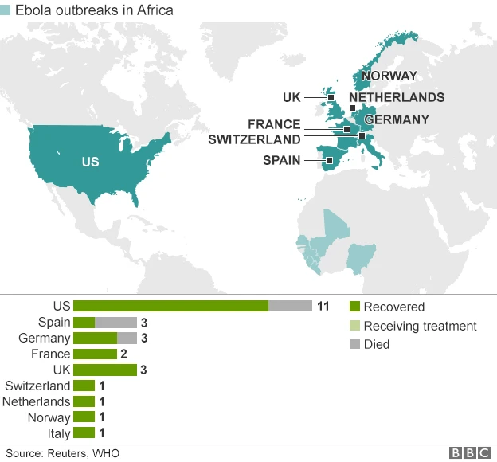
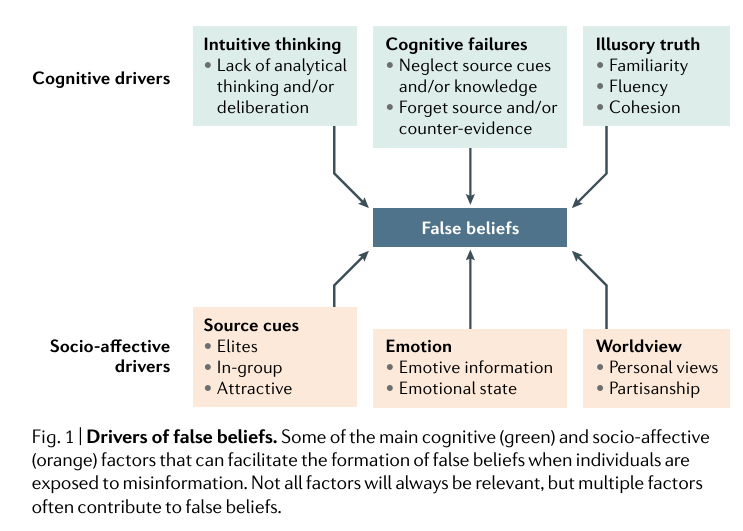

📚 Thinking Critically against MDM
Case Study: The 2014 Ebola Outbreak and Media-Induced Panic
Situation: Real-world Ebola outbreak in West Africa, with over 11,000 deaths in Guinea, Sierra Leone, and Liberia; largest Ebola outbreak in the history of the continent

Data Source: Butler (2014), Analysis Adapted for Course
Consider 2 Headlines:
“Ebola Outbreak Spreads: Deadly Virus Reaches U.S.!”
“Ebola Cases in the U.S. Remain Extremely Rare, No Sign of Outbreak.”
Initial Reaction (Cognitive Bias in Action)
📌 Ask Yourself:
How does each headline make you feel?
Which one seems more urgent? Why?
If you saw the first headline on social media, would you share it? What about the second?
🔎 Biases at Play:
Negativity Bias: The first headline triggers fear and concern.
Framing Effect: The same data is presented in two ways—one alarming, one neutral.
Availability Heuristic: If people recall hearing about Ebola often, they may assume it was a bigger risk than it actually was in the U.S.

Source: BBC: Ebola, Mapping the Outbreak
Analyzing the Data (Context vs. Fear)
11,000+ deaths, ~30,000 reported cases in West Africa (actual crisis).
4 domestic cases, 1 death (low actual risk); 6 were repatriated cases (non domestic)
50,000+ flu deaths in the U.S. the same year (comparative risk).
Applying This to Today
🔎 Compare this case to recent misinformation:
2024 Fake Ballot Destruction Video (Exploited confirmation bias)
COVID-19 coverage and panic cycles (Fear-based framing)
AI-generated fake war footage
Reflection Questions:
1️⃣ Think about the last time you saw viral misinformation online.
What made it catch your attention?
Did it spark an emotional reaction (e.g., outrage, fear, humor)?
Did you feel an impulse to share or comment? Why?
2️⃣ What makes false information feel true?
Have you ever encountered information that you later realized was misleading?
Why did it seem believable at first?
What mental shortcuts do you think played a role in your initial reaction?
3️⃣ Why do people struggle to correct misinformation once they believe it?
Even when presented with evidence, why do people sometimes cling to false beliefs?
What factors (social, emotional, cognitive) make it hard to admit we were wrong?
We’ve seen how framing, bias, and selective statistics shaped public perception of Ebola. But why do people fall for misinformation, even when the truth is available?
The answer lies in how our brains process information—misinformation isn’t just about false facts, it’s about how those facts are packaged to feel compelling.
Let’s break down the psychology of persuasion and why misinformation spreads so easily.
🔹 Common Psychological Traps

🧠 Cognitive Pitfalls: Why We Believe Falsehoods Without Thinking
1️⃣ Intuitive Thinking (Fast, automatic, and effortless decisions)
Instead of critically analyzing information, we often rely on quick judgments.
Trap: If something feels right, we believe it—even when it’s false.
Example: A viral meme confirms what you already suspect, so you trust it without fact-checking.
2️⃣ Cognitive Failures (We neglect key details that could expose falsehoods)
People tend to forget the source of information while remembering the message itself.
Trap: Even when we initially scrutinize a claim, over time we lose the contextual cues—like its origin—that signal it might be unreliable.
Example: “I don’t remember where I read this, but I know it’s true.”
3️⃣ Illusory Truth Effect (Repetition makes lies seem true)
If we see a claim over and over, we assume it must be accurate.
Trap: The more we see a claim, the more real it feels—even if it’s false.
Example: A health hoax resurfaces every few months, making it feel true over time.
❤️ Emotional & Social Traps: Why We Trust Misinformation From Those We Like
4️⃣ Source Cues (Who says it matters more than what they say)
We’re more likely to trust information from people we admire or agree with.
Trap: We dismiss credible sources if they conflict with our group’s beliefs.
Example: “If my favorite politician said it, it must be true.”
5️⃣ Emotional Triggers (Fear, outrage, and humor override logic)
Misinformation is often highly emotional, which makes it more memorable and shareable.
Trap: When we’re angry or scared, we think less critically.
Example: “This news made me furious—I had to share it immediately!”
6️⃣ Worldview & Partisanship (We filter reality through personal beliefs)
Our existing ideologies, values, and group loyalties shape what we accept as truth.
Trap: We unconsciously reject facts that contradict our worldview.
Example: A fact-check proves a false claim wrong, but people cling to their beliefs anyway.
🔎 💡 Reflection Questions Before Moving Forward
💭 Think about a time you believed or almost believed misinformation.
Which of these cognitive traps influenced your judgment?
How did emotion or social influence override facts in your decision-making?
🧠 Quick Review Questions
A strong emotional reaction can override ______ thinking.
Why do emotional triggers make misinformation more persuasive?
They force people to think critically
They make people more likely to question the information
They cause fast, emotional reactions instead of logical thinking
They help people better evaluate the credibility of sources
When we seek out and believe information that aligns with our pre-existing beliefs, we are demonstrating ______ bias.
Which of the following is an example of the Illusory Truth Effect?
Believing a false claim because you’ve seen it repeatedly
Trusting a source without checking its credibility
Assuming something is true because a celebrity shared it
Spreading misinformation to fit a political agenda
After a major election, a shocking tweet goes viral about voter fraud. Why are people more likely to share it before checking facts?
The tweet is backed by official election data.
Emotional reactions override critical thinking, making people react before verifying.
People always fact-check before sharing political content.
The tweet includes complex statistical data that most people fully analyze before sharing.
✅ Answers:
A strong emotional reaction can override critical thinking.
They cause fast, emotional reactions instead of logical thinking.
When we seek out and believe information that aligns with our pre-existing beliefs, we are demonstrating confirmation bias.
Believing a false claim because you’ve seen it repeatedly.
Emotional reactions override critical thinking, making people react before verifying.
Image Source: Harvard Misinformation Review
Case Study: Plandemic – A Blueprint for Disinformation
📖 Analysis Source: Plandemic Revisited: A Product of Planned Disinformation Amplifying the COVID-19 “Infodemic”
🔹 The Top 5 False Claims from Plandemic – And Why They Were Wrong
1️⃣ Claim: COVID-19 was intentionally created and released to control the population.
🔍 Fact Check:
No scientific evidence supports the claim that COVID-19 was intentionally engineered or released.
Multiple studies confirm that SARS-CoV-2 originated in nature, likely from animal-to-human transmission (Andersen et al., 2020).
Intelligence agencies worldwide, including the WHO and CDC, found no evidence of deliberate release.
❌ Why this claim was effective:
It played on fear and distrust of authority, making people feel like they were uncovering a hidden truth.
2️⃣ Claim: Wearing masks weakens the immune system and increases susceptibility to illness.
🔍 Fact Check:
There is NO scientific basis for the idea that wearing masks suppresses immune function.
Masks reduce the spread of respiratory droplets, protecting both the wearer and others.
Doctors, surgeons, and healthcare workers wear masks for hours daily without adverse effects.
🛑 Debunked by: CDC, WHO, dozens of peer-reviewed studies proving that masks reduce infection rates.
❌ Why this claim was effective:
It appealed to anti-mask sentiments and discomfort, reinforcing existing biases.
3️⃣ Claim: COVID-19 vaccines are dangerous and part of a global population control effort.
🔍 Fact Check:
Clinical trials involving millions of people have proven COVID-19 vaccines safe and effective.
There is zero evidence linking vaccines to population control, infertility, or DNA alteration.
The CDC, WHO, and independent health agencies worldwide have extensively reviewed vaccine safety.
🛑 Debunked by:
Multiple peer-reviewed vaccine safety studies
❌ Why this claim was effective:
It exploited vaccine hesitancy and spread fear through anecdotes and out-of-context data.
4️⃣ Claim: Hospitals were inflating COVID-19 deaths for financial gain.
🔍 Fact Check:
Hospitals did not fabricate death counts for profit—COVID-19 deaths were reported based on medical diagnoses and testing.
Excess mortality data shows that COVID-19 deaths were likely undercounted, not inflated (Moghadas et al., 2021).
Doctors and hospitals faced overwhelming strain, not financial incentive, during the pandemic.
🛑 Debunked by: CDC, WHO, fact-checkers, and public health statistics showing actual death tolls.
❌ Why this claim was effective:
It triggered distrust in the healthcare system, making people less likely to seek medical care.
5️⃣ Claim: Bill Gates and other elites orchestrated the pandemic to push global vaccination programs for profit.
🔍 Fact Check:
The Bill & Melinda Gates Foundation has donated billions to public health efforts, not profited from vaccines.
No evidence supports claims that Gates or other global figures orchestrated COVID-19.
This claim relied on deep-seated conspiracy theories about global elites controlling society.
🛑 Debunked by: Investigative reports, independent financial audits, and Gates’ public financial disclosures.
❌ Why this claim was effective:
It fed into pre-existing conspiracy theories about global control and pharmaceutical companies.
🎥 Video: How We Can Protect Truth in the Age of MDM
Now that we understand why misinformation spreads, what can be done to slow or stop it?
Are social media companies responsible for fixing misinformation, or should individuals take more responsibility?
What role should governments and fact-checkers play?
Sinan Aral’s TED Talk is an excellent bridge between understanding why misinformation spreads and how we can fight back against it using data-driven strategies.
[1]:
#Import appropriate library
from IPython.display import YouTubeVideo
YouTubeVideo("-7ORAKULel4", width=600, height=450)
[1]:
🧠 Quick Review Questions
What is one of the main reasons misinformation spreads so quickly on social media?
People actively seek out misinformation
Misinformation is designed to be more engaging than true information
Social media companies prioritize fact-checking over engagement
According to the video, what role do social media algorithms play in spreading misinformation?
They prevent misinformation from going viral
They prioritize engagement, which can amplify falsehoods
They flag misinformation immediately before it spreads
They promote only fact-checked content
What is a suggested approach to slowing the spread of misinformation?
Banning all social media discussions on controversial topics
Allowing only news organizations to post on social media
Increasing transparency in social media algorithms and promoting fact-checking
Encouraging users to report any post they disagree with
✅ Answers:
Misinformation is designed to be more engaging than true information.
They prioritize engagement, which can amplify falsehoods.
Increasing transparency in social media algorithms and promoting fact-checking.
🔹 Strengthening Critical Thinking
📌 Misinformation is designed to exploit gaps in critical thinking.
🛠️ Critical Thinking is NOT About Skepticism—It’s About Rational Evaluation Misinformation thrives when critical thinking is weak. To counter this, we must recognize the common errors in reasoning that false information exploits.
🔍 Common Errors in Critical Thinking That Misinformation Exploits
✅ Overconfidence Bias – “I’m too smart to be fooled!”
Why it’s dangerous: Misinformation preys on confidence—the more sure we are, the less likely we are to fact-check.
✅ Thinking in Absolutes – “It’s 100% true or 100% false!”
Why it’s dangerous: Reality is often nuanced, but misinformation thrives on black-and-white framing.
✅ Trusting “Gut Feelings” Over Evidence – “It just feels true!”
Why it’s dangerous: Misinformation is designed to feel intuitive—but feelings are not evidence.
✅ Echo Chamber Thinking – “Everyone I know believes this!”
Why it’s dangerous: Misinformation spreads within like-minded communities, making it feel more credible.
1️⃣ Who is the source?
Is this a reliable, fact-based source, or an opinionated outlet?
Does the author have expertise in this topic?
2️⃣ What’s the evidence?
Are credible sources cited?
Is this claim consistent with known facts?
3️⃣ Could I be emotionally biased?
Does this make me angry, scared, or excited?
Would I still believe this if it supported the opposite view?
4️⃣ Is this claim repeated elsewhere?
Have multiple independent sources reported it?
Or is it just one source amplifying itself?
5️⃣ What’s the intention?
Does this content inform, persuade, or manipulate?
Who benefits if I believe this?
“Government admits 5G towers are linked to rising health issues!”
How would you apply critical thinking before sharing?
🔹 Revisiting Plandemic: Applying Critical Thinking
📌 Now that we’ve explored cognitive biases and strengthened our critical thinking skills, let’s revisit the case study of Plandemic—this time with a critical lens.
The viral success of Plandemic was not an accident—it was designed to bypass critical thinking and exploit psychological vulnerabilities. But how could we have spotted the deception sooner?
🛠 Applying the “Think Before You Share” Framework
1️⃣ Who is the Source? ❓ Who created Plandemic and were they credible experts?
The documentary featured discredited figures rather than scientific experts.
It lacked peer-reviewed research and relied on unsupported claims.
💡 Critical Thinking in Action:
Cross-check credentials—Is the source a recognized expert in the field?
Look beyond titles—A person claiming to be a scientist does not mean they are an expert in virology or epidemiology.
2️⃣ What’s the Evidence? ❓ Did Plandemic present strong, verifiable evidence?
The video used cherry-picked data, misleading statistics, and out-of-context claims.
Many claims were refuted by public health agencies, but the documentary never acknowledged this counter-evidence.
💡 Critical Thinking in Action:
Seek peer-reviewed research—Are these claims backed by scientific studies or only by personal testimony?
Check if opposing evidence exists—A strong claim should stand up to multiple independent analyses.
3️⃣ Could Emotions Influence Belief? ❓ Did Plandemic trigger emotional reactions to override logic?
It framed information using fear, outrage, and distrust, making people less likely to fact-check.
The film portrayed viewers as “brave truth-seekers”, appealing to a sense of personal empowerment.
💡 Critical Thinking in Action:
Identify emotional triggers—Does the claim invoke fear, anger, or urgency to pressure immediate action?
Pause before sharing—Misinformation thrives on fast reactions, so take time to verify before engaging.
4️⃣ Is This Claim Repeated Elsewhere? ❓ Was Plandemic widely supported by independent, reliable sources?
The claims were rejected by scientific institutions, yet the video relied on echo chamber amplification.
The documentary spread through social media and conspiracy forums, not scientific or journalistic outlets.
💡 Critical Thinking in Action:
Use lateral reading—What do reputable fact-checkers and independent sources say?
Compare coverage—If a claim is true, it should be verified by multiple independent sources, not just one niche community.
5️⃣ What’s the Intention? ❓ Did Plandemic seek to inform, or did it have another motive?
The film encouraged distrust in public health, promoting conspiracy theories over verified science.
It framed itself as “forbidden knowledge”, a classic misinformation tactic to make false claims feel exclusive and valuable.
💡 Critical Thinking in Action:
Question the motive—Is the goal to educate and inform, or to persuade and provoke?
Ask who benefits—Is this information designed to promote truth, or to manipulate belief for a specific agenda?
🚀 Next Up 📌 Critical thinking helps us recognize misinformation—but what if we could prepare our minds before exposure?
Next, we’ll explore prebunking, a proactive strategy to inoculate ourselves against misinformation before we encounter it.
By anticipating manipulation tactics, we can resist deception in real-time.
🔹 Prebunking
📝 Source: A Practical Guide to Prebunking
🔍 Key Elements of Effective Prebunking:
- Exposure and Explanation (Forewarning):Introduce common misinformation techniques so that individuals can recognize similar patterns in real-world scenarios.
- Interactive Engagement:Utilize interactive experiences—such as simulations or games—to let people experiment with misinformation in a controlled setting. This hands-on approach reinforces understanding and retention.
- Timely Intervention:Deliver prebunking messages before individuals are exposed to actual misinformation, ensuring that they are better prepared to scrutinize and debunk false claims.
📊 Example: Studies show that playing “fake news” games—where participants create their own misinformation—reduces susceptibility to real misinformation later. Roozenbeek et al., 2019
🛑 Common Manipulation Tactics to Be Aware Of
Repetition
Example: A misleading health claim like “Drinking lemon water cures cancer” is repeated across various platforms. Over time, the claim gains unwarranted credibility simply due to frequent exposure.
Emotional Appeals
Example: An advertisement features distressing images of suffering children to promote a charity, prompting viewers to donate impulsively without critically assessing how the funds will be used.
Conspiracy Theories
Example: A social media post alleges that a secret global cabal is orchestrating world events, offering no verifiable evidence yet appealing to fears of unseen forces controlling our lives.
False Balance
Example: A news segment gives equal time to a climate scientist and a climate change denier, misleadingly suggesting that there is significant scientific controversy over climate change.
Fake Experts
Example: A celebrity with no scientific background endorses a pseudoscientific remedy for COVID-19, presenting themselves as an authority despite lacking relevant expertise.
Cherry-Picking
Example: A single study finding minor side effects from a vaccine is highlighted in isolation, ignoring the broader consensus and numerous studies that confirm the vaccine’s overall safety.
Decontextualization
Example: A politician’s statement is excerpted and shared without its full context, making it seem as though they support a controversial policy, when the complete speech reveals a more nuanced position.
Scapegoating
Example: A political narrative blames a particular ethnic minority for a country’s economic woes, diverting attention from the complex array of factors that actually contribute to the issue.
By familiarizing audiences with these tactics and illustrating them with real-world examples, prebunking initiatives empower individuals to critically evaluate information before it is internalized.
Prebunking Games & Tools for Students
Interactive prebunking games are engaging tools that help build resilience against misinformation by simulating real-world manipulation tactics. Here are some well-known and reputable prebunking games you can check out:
Bad News
Description: In this award-winning online game, you assume the role of a fake news creator. By experimenting with various misinformation strategies, you learn how deceptive tactics work, ultimately strengthening your ability to spot and resist misleading claims.
Link: Bad News
GoViral!
Description: This interactive tool challenges you to identify and combat false narratives. By exposing you to common tactics used in the spread of misinformation, GoViral! helps develop critical thinking skills and reinforces your ability to evaluate information sources effectively.
Link: GoViral!
Harmony Square
Description: Set in a peaceful community known for its pond swan and annual Pineapple Pizza Festival, this game appoints the player as the “Chief Disinformation Officer,” tasked with polarizing the people of Harmony Square and using trolling campaigns during political elections.
Link: Harmony Square
Many educational institutions and fact-checking organizations also offer media literacy modules that incorporate prebunking techniques. Engaging with these games and resources can be an effective first step toward becoming a more discerning consumer of information.
While both prebunking and debunking address misinformation, they differ in timing and approach:
Debunking (Reactive):
Goal: Correct misinformation after it appears by clarifying inaccuracies and providing evidence-based facts.
Example (Maricopa County Ballot Duplication): When a rumor claims that illegitimate ballots are being counted, officials directly refute it with evidence—explaining that duplicated ballots exist only to ensure damaged or otherwise unreadable ballots can be properly counted, not to add extra votes.
Prebunking (Proactive):
Goal: Inoculate people against future misinformation by offering accurate information and exposing common manipulation tactics before falsehoods circulate.
Example (Maricopa County Voting): Rather than waiting for a myth to spread, officials proactively explain how ballot verification works—detailing the signature checks, audits, and secure processes in place. This ensures voters understand the safeguards beforehand, making them more resistant to false claims.
By laying a foundation of knowledge through prebunking, people are better equipped to spot and reject misleading claims the moment they encounter them. Debunking remains important—especially when misinformation has already spread—but proactive education often proves more effective in preventing the initial influence of falsehoods.
🧠 Quick Review Questions
What is the main goal of prebunking?
To remove misinformation from the internet completely
To help people recognize and resist misinformation before they encounter it
To fact-check all news articles before they are published
To restrict access to online information
Prebunking is the proactive approach to misinformation defense, similar to a ______ for the mind.
Why is prebunking compared to a vaccine?
It strengthens resistance by exposing people to weakened versions of misinformation tactics
It prevents misinformation from being created
It works instantly without any additional effort
It only applies to medical misinformation
One key strategy in prebunking is ______, which alerts people about common misinformation tactics before they encounter them.
Which of the following is NOT a key step in the prebunking process?
Forewarning – Alerting people about common misinformation tactics
Pre-Exposure – Showing examples of misinformation before real cases
Cognitive Resistance – Strengthening critical thinking
Suppression – Removing all misinformation posts from social media
One example of manipulation is ______, where facts are twisted to suggest a hidden plot or secret agenda.
Which misinformation tactic involves framing issues as only having two extreme options?
Cherry-Picking Data
False Dilemmas
Emotional Manipulation
Algorithm Bias
A common misinformation tactic called ______ involves using an unqualified individual to promote false information as an authority.
✅ Answers:
To help people recognize and resist misinformation before they encounter it
vaccine
It strengthens resistance by exposing people to weakened versions of misinformation tactics
forewarning
Suppression – Removing all misinformation posts from social media
conspiracy theories
False Dilemmas
fake experts
🔹 Media Literacy
📌 If prebunking is about recognizing misinformation tactics, media literacy is about developing lifelong critical thinking skills to navigate today’s complex information landscape.
📝 Source: Carnegie – Media Literacy Case Study
🔎 Key Media Literacy Skills
1️⃣ Lateral Reading vs. Vertical Reading
Lateral Reading → Checking multiple reputable sources to verify a claim.
Vertical Reading → Examining one source in detail (often unreliable for fact-checking).
📌 What is Vertical Reading?
Vertical reading is the traditional method of evaluating information by staying within a single source. This approach involves:
📌 Problem?
Misinformation websites appear credible, even when they aren’t.
The author’s credentials may be fake or exaggerated.
The About page is controlled by the website itself and may be misleading.
📌 What is Lateral Reading?
Lateral reading is the gold standard for fact-checking. Instead of staying within the website, lateral readers open multiple sources and cross-check.
📌 Why This Works?
Misinformation often sounds credible in isolation but falls apart when compared to trusted sources.
Fact-checking is external—it doesn’t rely on what the source claims about itself.
📊 Lateral vs. Vertical Reading: A Side-by-Side Comparison
Feature |
Vertical Reading |
Lateral Reading |
|---|---|---|
Where you check information |
Stays within the same website |
Cross-checks multiple external sources |
Fact-Checking Approach |
Reads About page, looks at website design, examines credentials |
Uses Google searches, fact-checking sites, academic sources |
Effectiveness Against Misinformation |
Low—misleading sites can appear credible |
High—reduces trust in misinformation |
Speed of Evaluation |
Slower—relies on deep reading of one source |
Faster—quickly finds consensus from multiple sources |
Example Scenario |
Reading a viral article & trusting its claims if the site looks professional |
Searching “Is [website name] credible?” and verifying through independent sources |
2️⃣ Source Evaluation – The “SIFT” Method

3️⃣ The Socratic Method: Digging Deeper into Claims
📌 Example:
Claim: “5G technology causes COVID-19.”
Clarification: What’s the proposed mechanism for this?
Evidence: What scientific studies support this?
Alternatives: Are there other explanations for COVID-19’s spread?
Implications: What happens if people believe this claim?
🚀 Takeaway: Good questions expose weak arguments and improve decision-making.
4️⃣ Fact-Checking Techniques for Digital Content
Not all misinformation is text-based. Images, videos, and audio clips can be deceptively edited. Here’s how to verify them:
🔎 Challenges of Media Literacy Initiatives
📌 While media literacy is a powerful tool, scaling these programs presents challenges:
🧠 Quick Review Questions
What is the main limitation of vertical reading?
It requires too much time to fact-check information
It focuses only on one source, which may be biased or misleading
It is too advanced for most internet users
It works better for printed newspapers but not online content
The ability to access, analyze, evaluate, create, and act using all forms of communication is known as ______.
Instead of relying on a single source, ______ reading involves checking multiple independent sources to verify a claim.
The best method for fact-checking is ______ reading.
Which of the following best describes the SIFT method?
A method used to filter social media posts based on engagement
A framework for evaluating online information by stopping, investigating, finding better coverage, and tracing claims
A strategy for removing misinformation posts automatically
A government policy to restrict unverified content
A misleading article claims that “Vaccines are dangerous,” but checking the claim against medical organizations like the WHO and CDC is an example of which step in the SIFT method? ______
A false claim that “5G causes COVID-19” could be challenged by the ______ questioning technique, which encourages asking for clarification, evidence, and alternative explanations.
The process of verifying whether an image was taken out of context by using Google Images or TinEye is called ______.
✅ Answers:
It focuses only on one source, which may be biased or misleading
media literacy
lateral
lateral
A framework for evaluating online information by stopping, investigating, finding better coverage, and tracing claims.
find better coverage
Socratic
reverse image search
💡 Final Reflection & Discussion
Asking the right questions is one of the most effective defenses against misinformation. Before concluding this lesson, take a moment to reflect on the following: